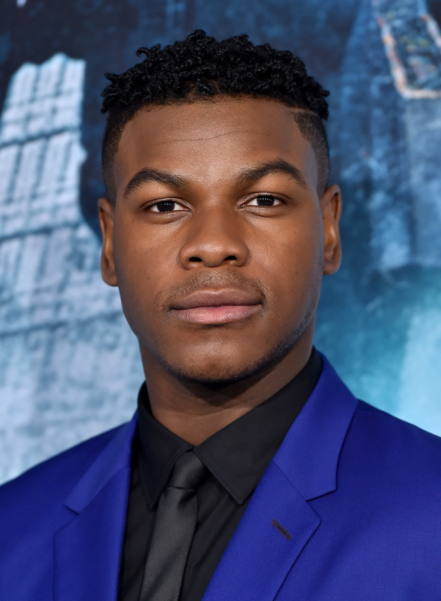
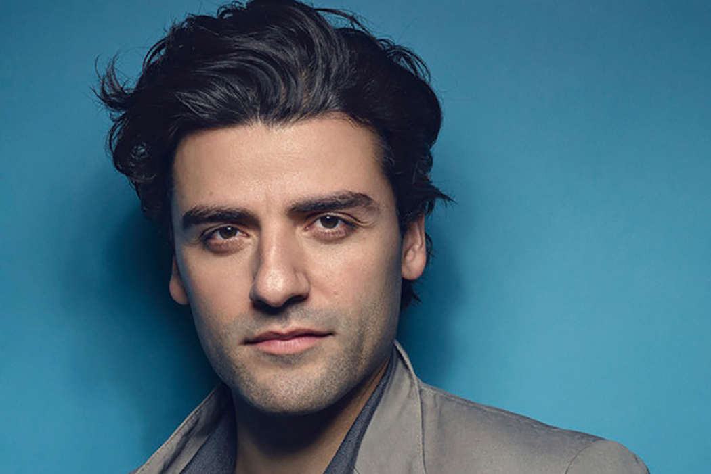

Main Characters and Actors
- Rey played by Daisy Ridley
- Finn played by John Boyega 
- Poe played by Oscar Isaac 
- Kylo Ren played by Adam Driver


Star Wars: The Rise of Skywalker's plot is about when it's discovered that the evil Emperor Palpatine did not die at the hands of Darth Vader, the rebels must race against the clock to find out his whereabouts. Finn and Poe lead the Resistance to put a stop to the First Order's plans to form a new Empire, while Rey anticipates her inevitable confrontation with Kylo Ren.
A movie in which a boy named Max dreams of a world where two characters named Sharkboy and Lavagirl find Max and have him help them save a planet named Planet Drool where Max's real teacher Mr. Electricidad is the electrician, Mr. Electric and is corrupting Planet Drool.
The characters later escape the dream and Mr. Electric travels to Earth planning to kill Max who is a threat to Mr. Electric because of his ability to control the dream.